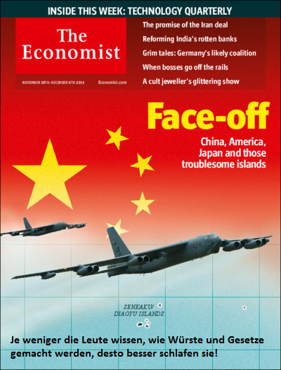

返回主页
《经济学人》的钓鱼岛

德文翻译：
The less the people know about how sausages and laws are made, the better they sleep in the night. Otto von Bismarck
Slogan: Laws are like sausages. It's better not to see them being made.
China, Japan and America: Face-off （冰球赛中等的）开球；对峙；敌对
China’s new air-defence zone suggests a worrying new approach in the region
http://www.economist.com/printedition/2013-11-30
A statesman cannot create anything himself. He must wait and listen until he hears the steps of God sounding through events; then leap up and grasp the hem of his garment. Man cannot control the current of events. he can only float with them and steer. When you want to fool the world, tell the truth. Never believe anything in politics until it has been officially denied. Otto von Bismarck
以下观点显然不合时宜：Sicherung des deutschen Lebensraums im Osten (Mein Kampf/Deep Blue）."Without war, inferior or decaying races would easily choke the growth of healthy budding elements." The quest for Lebensraum was more than just an attempt to resolve potential demographic problems: it was a necessary means of defending the German race against stagnation and degeneration.
version:1.0; jobnet@188.com © retter2012.com